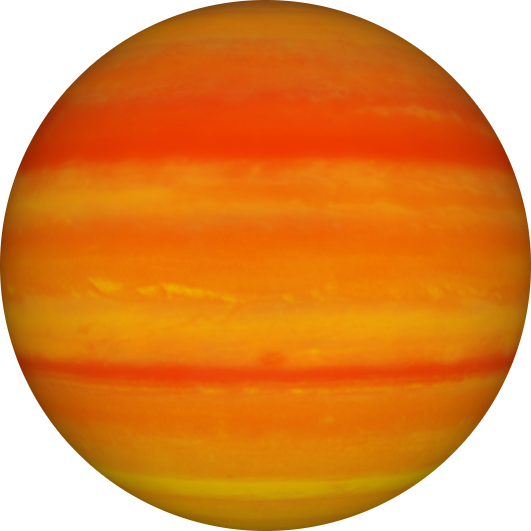
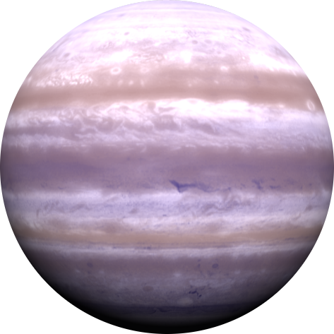

42 Draconis b on eksoplaneetta, joka virallisesti on nimetty nimellä Orbitar. Se on 315 valovuotta kaukana meidän maapallosta ja kiertää K-tyypin tähteä. Massaltaan 3.88 Jupiteria. 42 Draconis b on kaasujättiläinen.Eksoplaneetta löydettiin vuonna 2009. Heinäkuussa 2014 Kansainvälinen tähtitieteen liitto aloitti tapahtuman "NameExoWorlds", jonka avulla julkisesti äänestettiin eksoplaneetoille ja niiden tähdilleen viralliset nimet. NameExoWorlds tapahtuman avulla nimettiin tämän sivun muiden eksoplaneettojen viralliset nimet.
 Linkki lähteeseen47 Ursae Majoris b on eksoplaneetta. Se on 46 valovuotta kaukana maapallosta. Viralliselta nimeltään Taphao Thong. Massaltaan se on 1.64 Jupiteria. Tämä eksoplaneetta kiertää G-tyypin tähteä ja löydettiin vuonna 1996. Eksoplaneetta on kaasujättiläinen eli sen sisältö on suurimmaksi osaksi vetyä ja heliumia. Tämä tarkoittaa oikeastaan sitä, että kiinteää ulkopintaa ei ole ja vasta planeetan ytimessä on kiinteää massaa, luultavimmin jäätä/kiveä.
 Linkki lähteeseenBD+14 4559 b on eksoplaneetta 161 valovuotta kaukana maasta. Eksoplaneetan koko on 1.04 Jupiteria. Virallisesti nimellä Pirx. Tämä eksoplaneetta kiertää K-tyypin tähteä ympäri. Löytöpäivä tälle eksoplaneetalle oli vuonna 2009.
 Linkki lähteeseen
Linkki lähteeseen
Tässä ovat tyypilliset tähtiluokat. Suurimmasta ja kuumimmasta, pienimpään ja viileimpään.
Lähteet
42 Draconis b: https://en.wikipedia.org/wiki/42_Draconis_b,
https://science.nasa.gov/exoplanet-catalog/42-draconis-b/.
47 Ursae majoris b: https://en.wikipedia.org/wiki/47_Ursae_Majoris_b,
https://science.nasa.gov/exoplanet-catalog/47-ursae-majoris-b/47_Ursae_Majoris_b.
BD+14 4559 b: https://en.wikipedia.org/wiki/BD%2B14_4559_b,
https://science.nasa.gov/exoplanet-catalog/bd14-4559-b/.